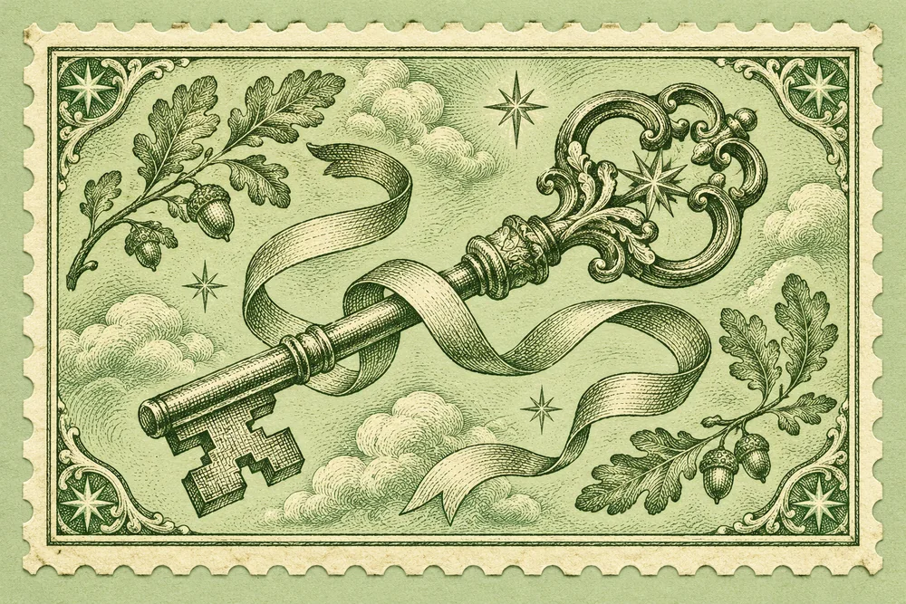

While You Wait for the Call
$12 USD
Somewhere between the final conversation and the next phone call, there’s a lot you want to say to someone you’re rooting for. Tell us about the role, the interviews, and what getting this job would mean. You can also commission this letter for yourself.
Inside your letter
If there were two rounds, we give each its own passage. We return to a moment the recipient wants to remember, write an intention for the waiting days, and close with a wish for the call they hope to receive.
- Full-length personal letter & printable PDF
- Illustrated wish card for your phone
- Digital delivery within 48 hours
Dear Ben, I hope you get the call. When they asked what you’d put in the bakery window first, I hope they saw your face when you said Grandma’s plum tart. I’ve seen that face. I’d buy two.
Example reviews
Illustrative examples for this page design. These comments and ratings are fictional, not customer feedback.
Helped me put the interview down
Reading about the moment I felt proud of helped me stop replaying every answer for a while.
A gift for the in-between days
I sent this to a friend after her final interview. It gave me a thoughtful way to say I was rooting for her.
Specific to the role
The letter picked up why the work mattered to me. That was more useful than a generic good-luck message.
Easy to keep close
The phone-sized wish card was a nice touch. I saved it beside my interview notes.
Warm, with room to breathe
I appreciated the calm tone. A little less repetition in the middle would have made it even stronger.